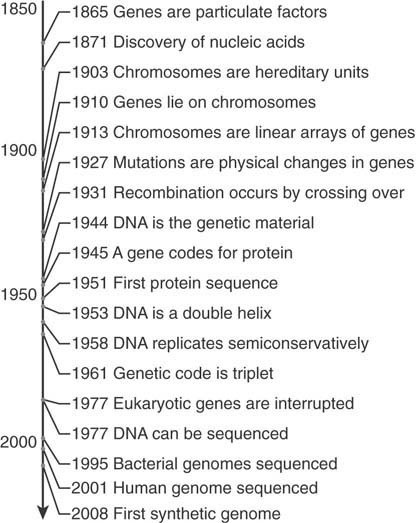
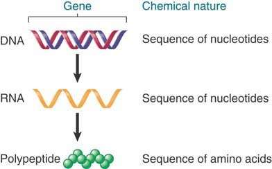

The hereditary basis of every living organism is its genome, a long sequence of deoxyribonucleic acid (DNA) that provides the complete set of hereditary information carried by the organism as well as its individual cells. The genome includes chromosomal DNA as well as DNA in plasmids and (in eukaryotes) organellar DNA, as found in mitochondria and chloroplasts. We use the term information because the genome does not itself perform an active role in the development of the organism. Rather, the products of expression of nucleotide sequences within the genome determine development. By a complex series of interactions, the DNA sequence directs production of all of the ribonucleic acids (RNAs) and proteins of the organism at the appropriate time and within the appropriate cells. Proteins serve a diverse series of roles in the development and functioning of an organism: they can form part of the structure of the organism; have the capacity to build the structure; perform the metabolic reactions necessary for life; and participate in regulation as transcription factors, receptors, key players in signal transduction pathways, and other molecules.
Physically, the genome can be divided into a number of different DNA molecules, or chromosomes. The ultimate definition of a genome is the sequence of the DNA of each chromosome. Functionally, the genome is divided into genes. Each gene is a sequence of DNA that encodes a single type of RNA and, in many cases, ultimately a polypeptide. Each of the discrete chromosomes comprising the genome can contain a large number of genes. Genomes for living organisms might contain as few as about 500 genes (for mycoplasma, a type of bacterium), about 20,000 for humans, or as many as about 50,000 to 60,000 for rice.
In this chapter, we explore the gene in terms of its basic molecular construction and basic function. FIGURE 1.1 summarizes the stages in the transition from the historical concept of the gene to the modern definition of the genome.
FIGURE 1.1 A brief history of genetics.
The first definition of the gene as a functional unit followed from the discovery that individual genes are responsible for the production of specific proteins. Later, the chemical differences between the DNA of the gene and its protein product led to the suggestion that a gene encodes a protein. This, in turn, led to the discovery of the complex apparatus by which the DNA sequence of a gene determines the amino acid sequence of a polypeptide.
Understanding the process by which a gene is expressed allows us to make a more rigorous definition of its nature. FIGURE 1.2 shows the basic theme of this book. A gene is a sequence of DNA that directly produces a single strand of another nucleic acid, RNA, with a sequence that is (at least initially) identical to one of the two polynucleotide strands of DNA. In many cases, the RNA is in turn used to direct production of a polypeptide. In other cases, such as ribosomal RNA (rRNA) and transfer RNA (tRNA) genes, the RNA transcribed from the gene is the functional end product. Thus, a gene is a sequence of DNA that encodes an RNA, and in proteincoding, or structural, genes, the RNA in turn encodes a polypeptide.
FIGURE 1.2 A gene encodes an RNA, which can encode a polypeptide.